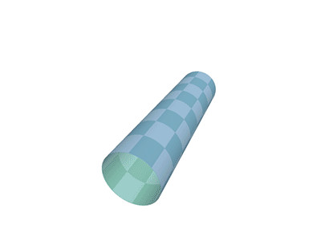
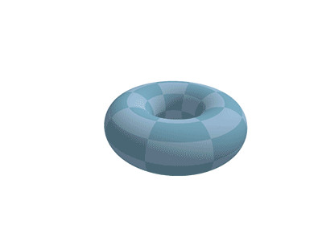
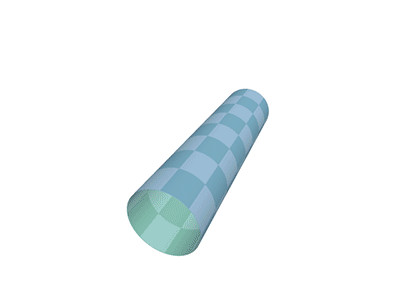
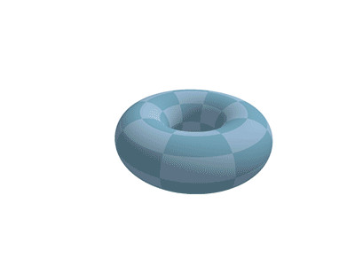
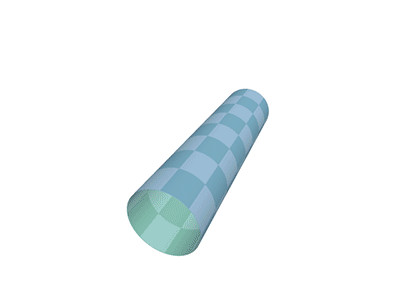
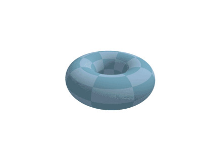

 
 Download from GitHub.
Brian Confessor - Lead Audio
Benedict Henshaw - Lead Designer
Bashar Saade - Lead Programmer
Tower defence in 3D space on the surface on a torus.
While the game borrows largely from other games in the tower defence genre, (specifically those in 3D: Orcs Must Die, Atom Zombie Smasher) those games generally operate on a 2D plane; the enemies are restricted to movement along a flat surface. Interstellar Courier's gameplay occurs on the surface of a torus; meaning a turret can project an object to an opposing side of the surface on which enemies move, causing the player to think about turret placement in real 3D space.
One of the reasons why we arrived at a torus was that path finding on it's surface is relatively simple. The map of a torus is a (slightly stretched) grid, meaning common path finding algorithms (e.g. Dijkstra's Algorithm) can operate on it without modification.
 
When looking at the variations of torus, we recognised some interesting properties:
The ratio of the radii of the cross section and the overall torus affects the visibility of a turret built on the inside of the torus verses the outside. Just like how radio towers need to be built very tall to negate effects of the Earth's curvature, the effectiveness of turrets depend greatly on the shape's curvature and their own height.
This ratio also affects the how stretched the turret placement grid is. A thick torus with a small overall radius will have smaller grid squares on the inside of the torus, and larger grid squares on the outside of the torus. One could subdivide the larger squares if they are beyond a certain threshold, but the grid will be deformed in a ways that make path finding difficult.